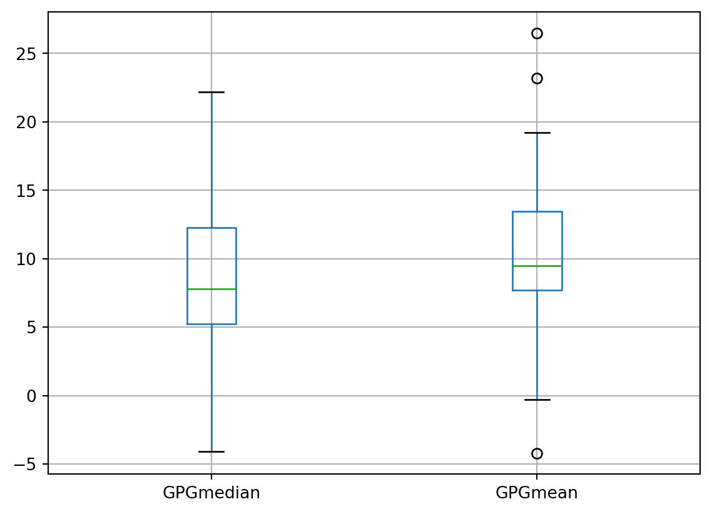

import pandas as pd
df = pd.read_excel('data/genderpaygap.xlsx', sheet_name='All')
df2 = pd.read_excel('data/genderpaygap.xlsx', sheet_name='Main')26 Lab: Gender gaps
26.1 Source
“Annual gender pay gap estimates for UK employees by age, occupation, industry, full-time and part-time, region and other geographies, and public and private sector. Compiled from the Annual Survey of Hours and Earnings.” https://www.ons.gov.uk/employmentandlabourmarket/peopleinwork/earningsandworkinghours/datasets/annualsurveyofhoursandearningsashegenderpaygaptables
26.2 Explanations
^ Gender pay gap defined as the difference between men’s and women’s hourly earnings as a percentage of men’s earnings.
^^ Employees on adult rates whose pay for the survey pay-period was not affected by absence. Estimates for 2020 include employees who have been furloughed under the Coronavirus Job Retention Scheme (CJRS).
Source: Annual Survey of Hours and Earnings, Office for National Statistics.
Table 2.12 Gender pay gap (%)^ - For all employee jobs^^: United Kingdom, 2020
26.2.1 Definitions
• Gender pay gap (GPG) - calculated as the difference between average hourly earnings (excluding overtime) of men and women as a proportion of average hourly earnings (excluding overtime) of men. For example, a 4% GPG denotes that women earn 4% less, on average, than men. Conversely, a -4% GPG denotes that women earn 4% more, on average, than men.
• Mean - a measure of the average which is derived by summing the values for a given sample, and then dividing the sum by the number of observations (i.e. jobs) in the sample. In earnings distributions, the mean can be disproportionately influenced by a relatively small number of high-paying jobs.
• Median - the value below which 50% of jobs fall. It is ONS’s preferred measure of average earnings as it is less affected by a relatively small number of very high earners and the skewed distribution of earnings. It therefore gives a better indication of typical pay than the mean.
• Full-time - employees working more than 30 paid hours per week (or 25 or more for the teaching professions).
26.2.2 Coverage and timeliness
ASHE covers employee jobs in the United Kingdom. It does not cover the self-employed, nor does it cover employees not paid during the reference period.
GPG estimates are provided for the pay period that included a specified date in April. They relate to employees on adult rates of pay, whose earnings for the survey pay period were not affected by absence. Estimates for 2020 include employees who have been furloughed under the Coronavirus Job Retention Scheme (CJRS).
ASHE is based on a 1% sample of jobs taken from HM Revenue and Customs’ Pay As You Earn (PAYE) records. Consequently, individuals with more than one job may appear in the sample more than once.
#### Quality measures
The colour coding within the tables indicates the quality of each estimate and is based upon the coefficient of variation (CV) values for the corresponding male and female earnings estimates. The CV is the ratio of the standard error of an estimate to the estimate itself and is expressed as a percentage. The smaller the CV the greater the accuracy of the estimate. The colour coding for the GPG estimates is derived as follows:
• If the CV values of both the male and female earnings estimates are less than or equal to 5% then the GPG estimate is considered good quality.
• If the CV value of either (or both) the male or female earnings estimate is greater than 5% and less than or equal to 10% (and the CV of the other estimate is less than or equal to 10%) then the GPG estimate is considered reasonable quality.
• If the CV value of either (or both) the male or female earnings estimate is greater than 10% and less than or equal to 20% (and the CV of the other estimate is less than or equal to 20%) then the GPG estimate is considered lower quality and should be used with caution.
• If the CV value of at least one of the earnings estimates is greater than 20% then the GPG estimate is considered unreliable for practical purposes and is suppressed.
26.3 Reading the dataset
Let’s have a look at our dataset
df| Professional_occupations | Code | GPGmedian | GPGmean | |
|---|---|---|---|---|
| 0 | All employees | 0 | 15.5 | 14.6 |
| 1 | Managers, directors and senior officials | 1 | 11.3 | 15.3 |
| 2 | Corporate managers and directors | 11 | 10.9 | 12.6 |
| 3 | Other managers and proprietors | 12 | 6.7 | 12.3 |
| 4 | Professional occupations | 2 | 9.1 | 12.8 |
| 5 | Science, research, engineering and technolog... | 21 | 7.8 | 8.6 |
| 6 | Health professionals | 22 | 14.6 | 26.5 |
| 7 | Teaching and educational professionals | 23 | 6.3 | 12.7 |
| 8 | Business, media and public service professio... | 24 | 8.5 | 11.9 |
| 9 | Associate professional and technical occupations | 3 | 12.9 | 14.1 |
| 10 | Science, engineering and technology associat... | 31 | 16.6 | 11.3 |
| 11 | Health and social care associate professionals | 32 | 7.4 | 11.3 |
| 12 | Protective service occupations | 33 | 6.5 | 6.9 |
| 13 | Culture, media and sports occupations | 34 | 1.3 | 23.2 |
| 14 | Business and public service associate profes... | 35 | 14.0 | 16.8 |
| 15 | Administrative and secretarial occupations | 4 | 7.5 | 9.5 |
| 16 | Administrative occupations | 41 | 6.3 | 8.2 |
| 17 | Secretarial and related occupations | 42 | -4.1 | 1.1 |
| 18 | Skilled trades occupations | 5 | 22.2 | 19.2 |
| 19 | Skilled agricultural and related trades | 51 | 11.3 | -4.2 |
| 20 | Skilled metal, electrical and electronic trades | 52 | 12.9 | 7.5 |
| 21 | Skilled construction and building trades | 53 | 7.5 | 6.2 |
| 22 | Textiles, printing and other skilled trades | 54 | 5.2 | 8.4 |
| 23 | Caring, leisure and other service occupations | 6 | 4.3 | 7.9 |
| 24 | Caring personal service occupations | 61 | 4.0 | 6.6 |
| 25 | Leisure, travel and related personal service... | 62 | 11.1 | 15.7 |
| 26 | Sales and customer service occupations | 7 | 2.5 | 7.2 |
| 27 | Sales occupations | 71 | 2.7 | 8.0 |
| 28 | Customer service occupations | 72 | 1.5 | 6.1 |
| 29 | Process, plant and machine operatives | 8 | 14.6 | 12.4 |
| 30 | Process, plant and machine operatives | 81 | 16.2 | 15.2 |
| 31 | Transport and mobile machine drivers and ope... | 82 | 11.6 | -0.3 |
| 32 | Elementary occupations | 9 | 5.3 | 9.0 |
| 33 | Elementary trades and related occupations | 91 | 8.2 | 8.4 |
| 34 | Elementary administration and service occupa... | 92 | 4.5 | 8.9 |
df2| Professional_occupations | Code | GPGmedian | GPGmean | |
|---|---|---|---|---|
| 0 | All employees | 0 | 15.5 | 14.6 |
| 1 | Managers, directors and senior officials | 1 | 11.3 | 15.3 |
| 2 | Professional occupations | 2 | 9.1 | 12.8 |
| 3 | Associate professional and technical occupations | 3 | 12.9 | 14.1 |
| 4 | Administrative and secretarial occupations | 4 | 7.5 | 9.5 |
| 5 | Skilled trades occupations | 5 | 22.2 | 19.2 |
| 6 | Caring, leisure and other service occupations | 6 | 4.3 | 7.9 |
| 7 | Sales and customer service occupations | 7 | 2.5 | 7.2 |
| 8 | Process, plant and machine operatives | 8 | 14.6 | 12.4 |
| 9 | Elementary occupations | 9 | 5.3 | 9.0 |
26.3.1 Missing values
Let’s check if we have any missing data
df.info()
df.isna().sum()<class 'pandas.core.frame.DataFrame'>
RangeIndex: 35 entries, 0 to 34
Data columns (total 4 columns):
# Column Non-Null Count Dtype
--- ------ -------------- -----
0 Professional_occupations 35 non-null object
1 Code 35 non-null int64
2 GPGmedian 35 non-null float64
3 GPGmean 35 non-null float64
dtypes: float64(2), int64(1), object(1)
memory usage: 1.2+ KBProfessional_occupations 0
Code 0
GPGmedian 0
GPGmean 0
dtype: int64df.boxplot(column=['GPGmedian', 'GPGmean'])<Axes: >
df.describe()| Code | GPGmedian | GPGmean | |
|---|---|---|---|
| count | 35.000000 | 35.000000 | 35.000000 |
| mean | 35.085714 | 8.705714 | 10.625714 |
| std | 28.307525 | 5.332031 | 5.946395 |
| min | 0.000000 | -4.100000 | -4.200000 |
| 25% | 8.500000 | 5.250000 | 7.700000 |
| 50% | 32.000000 | 7.800000 | 9.500000 |
| 75% | 53.500000 | 12.250000 | 13.450000 |
| max | 92.000000 | 22.200000 | 26.500000 |
df[['GPGmedian']].plot(kind='hist', ec='black')<Axes: ylabel='Frequency'>
df2.plot.bar(x = 'Professional_occupations', y = 'GPGmedian')<Axes: xlabel='Professional_occupations'>
df2.GPGmedian0 15.5
1 11.3
2 9.1
3 12.9
4 7.5
5 22.2
6 4.3
7 2.5
8 14.6
9 5.3
Name: GPGmedian, dtype: float64import pandas as pd
import numpy as np
#By default the aggreggate function is mean
df.pivot_table(index=['Professional_occupations'], values=['GPGmean'])| GPGmean | |
|---|---|
| Professional_occupations | |
| Administrative occupations | 8.2 |
| Business and public service associate professionals | 16.8 |
| Business, media and public service professionals | 11.9 |
| Caring personal service occupations | 6.6 |
| Corporate managers and directors | 12.6 |
| Culture, media and sports occupations | 23.2 |
| Customer service occupations | 6.1 |
| Elementary administration and service occupations | 8.9 |
| Elementary trades and related occupations | 8.4 |
| Health and social care associate professionals | 11.3 |
| Health professionals | 26.5 |
| Leisure, travel and related personal service occupations | 15.7 |
| Other managers and proprietors | 12.3 |
| Process, plant and machine operatives | 15.2 |
| Protective service occupations | 6.9 |
| Sales occupations | 8.0 |
| Science, engineering and technology associate professionals | 11.3 |
| Science, research, engineering and technology professionals | 8.6 |
| Secretarial and related occupations | 1.1 |
| Skilled agricultural and related trades | -4.2 |
| Skilled construction and building trades | 6.2 |
| Skilled metal, electrical and electronic trades | 7.5 |
| Teaching and educational professionals | 12.7 |
| Textiles, printing and other skilled trades | 8.4 |
| Transport and mobile machine drivers and operatives | -0.3 |
| Administrative and secretarial occupations | 9.5 |
| All employees | 14.6 |
| Associate professional and technical occupations | 14.1 |
| Caring, leisure and other service occupations | 7.9 |
| Elementary occupations | 9.0 |
| Managers, directors and senior officials | 15.3 |
| Process, plant and machine operatives | 12.4 |
| Professional occupations | 12.8 |
| Sales and customer service occupations | 7.2 |
| Skilled trades occupations | 19.2 |
26.3.2 Interpreting the estimates
“It should be noted that the figures do not show differences in rates of pay for comparable jobs, as these are affected by factors such as the proportion of men and women working part time or in different occupations. For example, a higher proportion of women work in occupations such as administration and caring, which tend to offer lower salaries.”